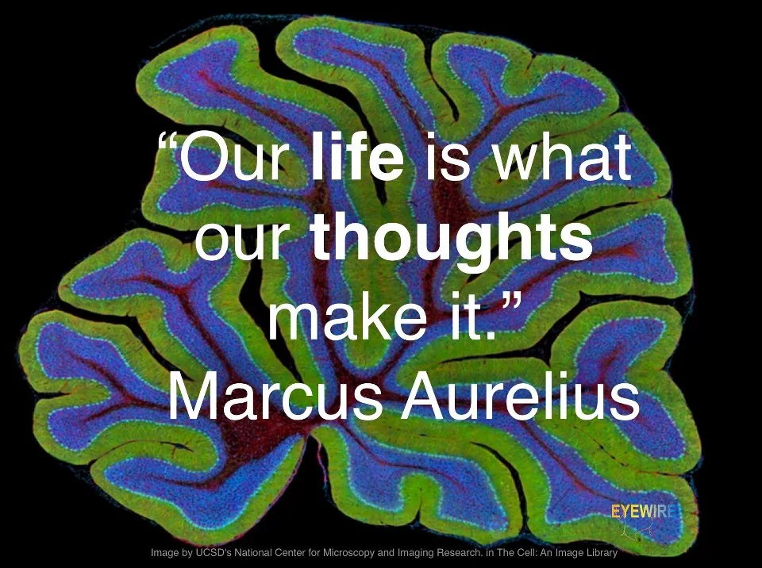

Blog · February 21, 2013
Getcha Happy On

Happy. Delighted. Spectacular. Stellar. Splendid. Wonderful. Awesome. Beautiful. Zesty. Thrilled. Bright. Effervescent. Astounding. Excellent. Fantastic. Superb. Exquisite. Marvelous. Stunning. Extraordinary. Lovely. Remarkable. Still haven’t smiled? Get on this epic.
Alright, video should be done now 🙂 Have a great day.
First published on my old blog, amyrobinson.wordpress.com, February 21, 2013.